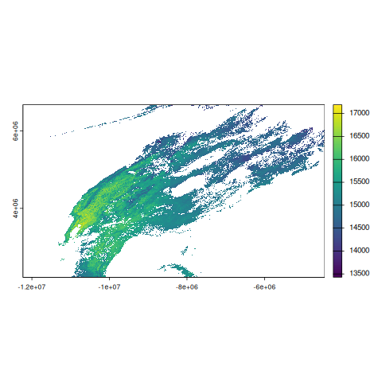
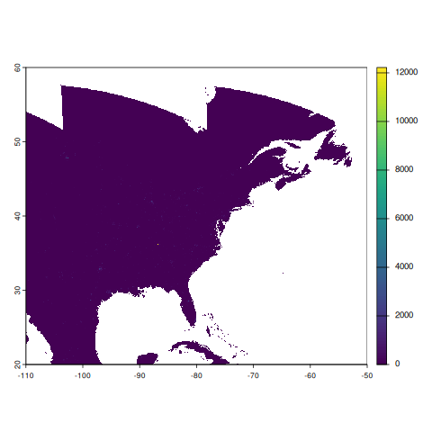
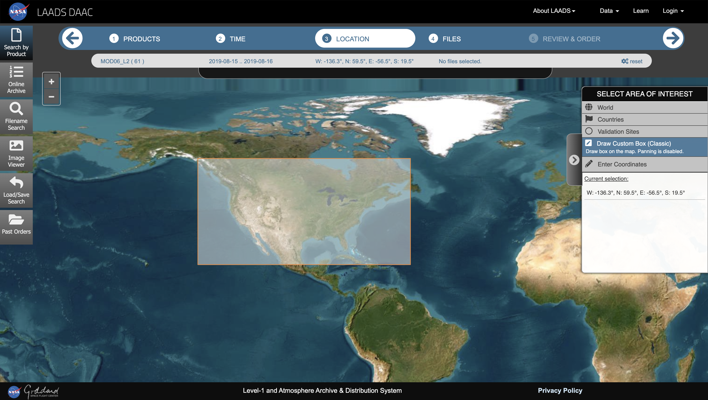
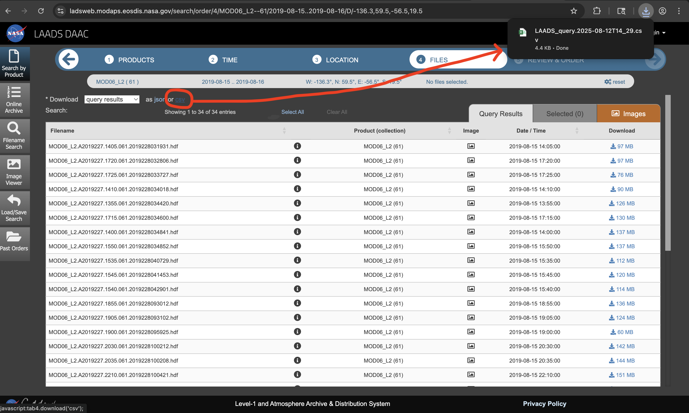
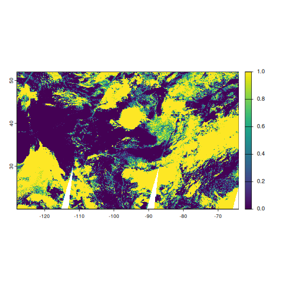

NASA Moderate Resolution Imaging Spectroradiometer (MODIS)
Mitchell Manware
2025-08-14
Source:vignettes/modis_workflow.Rmd
modis_workflow.RmdThis vignette demonstrates how to download, process, and calculate
covariates from the NASA’s Moderate Resolution Imaging Spectroradiometer
(MODIS) products using amadeus functions. Examples are
provided for the MOD11A1 (land surface temperature),
MOD06_L2 (clouds 5-m L2 swath), and VNP46A2
(VIIRS nightime lights) products. The messages returned by
amadeus functions have been omitted for brevity.
MODIS Grids
MODIS product data files are separated based on tile grid numbers. To download data for a specific geographic area, users must first identify which tile grids correspond to the area of interest. The area of interest for these vignettes will be the contiguous United States, corresponding to horizontal tiles 7 to 13 and vertical tiles 3 to 6. See MODIS Grids for further details.
NASA Earthdata Token
To download NASA MODIS files, users must first register for a NASA EarthData account and generate a user-specific token. For instructions, see the Protected Data Sources vignette.
MOD11A1 - Land Surface Temperature (LST)
The MOD11A1 - MODIS/Terra Land Surface Temperature/Emissivity Daily L3 Global 1km SIN Grid V061 product provides daily, global land surface temperature (LST) estimates at 1km resolution.
Downloaded data files are Hierarchical Data Format (HDF), with the
extension .hdf
-
dataset_name = "modis": MODIS dataset name. -
product = "MOD11A1": MODIS product name. -
version = "61": Version 6.1 (most recent release as of 08/07/2025). -
horizontal_tiles = c(7, 13): Horizontal sinusoidal tiles. -
vertical_tiles = c(3, 6): Vertical sinusoidal tiles. -
date = c("2019-09-01", "2019-09-02"): Dates of interest. -
nasa_earth_data_token = Sys.getenv("EARTHDATA_TOKEN"): User-specific NASA credentials. -
directory_to_save = dir_mod11a1: directory to save the downloaded files. -
acknowledgement = TRUE: acknowledge that the raw data files are large and may consume lots of local storage. -
download = TRUE: download the data files. -
remove_command = TRUE: remove the temporary command file used to download the data. -
hash = TRUE: generate unique SHA-1 hash for the downloaded files.
dir_mod11a1 <- file.path(tempdir(), "mod11a1")
amadeus::download_data(
dataset_name = "modis",
product = "MOD11A1",
version = "61",
horizontal_tiles = c(7, 13),
vertical_tiles = c(3, 6),
date = c("2019-08-15", "2019-08-16"),
nasa_earth_data_token = Sys.getenv("EARTHDATA_TOKEN"),
directory_to_save = dir_mod11a1,
acknowledge = TRUE,
download = TRUE,
remove_command = TRUE,
hash = TRUE
)2 / 2 days of data available in the queried dates.
Downloading requested files...
[`wget` DOWNLOAD OUTPUT OMITTED]
Requested files have been downloaded.
Requests were processed.
[1] "bbbd6812cf686d9dac059a6aab27293d"Check that the downloaded files correspond to the requested tiles and dates.
list.files(dir_mod11a1, recursive = TRUE) [1] "2019/244/MOD11A1.A2019244.h07v03.061.2020359040222.hdf"
[2] "2019/244/MOD11A1.A2019244.h07v05.061.2020359040223.hdf"
[3] "2019/244/MOD11A1.A2019244.h07v06.061.2020359040210.hdf"
[4] "2019/244/MOD11A1.A2019244.h08v03.061.2020359040215.hdf"
[5] "2019/244/MOD11A1.A2019244.h08v04.061.2020359040147.hdf"
[6] "2019/244/MOD11A1.A2019244.h08v05.061.2020359040228.hdf"
[7] "2019/244/MOD11A1.A2019244.h08v06.061.2020359040221.hdf"
[8] "2019/244/MOD11A1.A2019244.h09v03.061.2020359040130.hdf"
[9] "2019/244/MOD11A1.A2019244.h09v04.061.2020359040211.hdf"
[10] "2019/244/MOD11A1.A2019244.h09v05.061.2020359040208.hdf"
[11] "2019/244/MOD11A1.A2019244.h09v06.061.2020359040116.hdf"
[12] "2019/244/MOD11A1.A2019244.h10v03.061.2020359040202.hdf"
[13] "2019/244/MOD11A1.A2019244.h10v04.061.2020359040203.hdf"
[14] "2019/244/MOD11A1.A2019244.h10v05.061.2020359040223.hdf"
[15] "2019/244/MOD11A1.A2019244.h10v06.061.2020359040146.hdf"
[16] "2019/244/MOD11A1.A2019244.h11v03.061.2020359040221.hdf"
[17] "2019/244/MOD11A1.A2019244.h11v04.061.2020359040244.hdf"
[18] "2019/244/MOD11A1.A2019244.h11v05.061.2020359040135.hdf"
[19] "2019/244/MOD11A1.A2019244.h11v06.061.2020359040057.hdf"
[20] "2019/244/MOD11A1.A2019244.h12v03.061.2020359040138.hdf"
[21] "2019/244/MOD11A1.A2019244.h12v04.061.2020359040148.hdf"
[22] "2019/244/MOD11A1.A2019244.h12v05.061.2020359040131.hdf"
[23] "2019/244/MOD11A1.A2019244.h13v03.061.2020359040116.hdf"
[24] "2019/244/MOD11A1.A2019244.h13v04.061.2020359040145.hdf"
[25] "2019/245/MOD11A1.A2019245.h07v03.061.2020359055441.hdf"
[26] "2019/245/MOD11A1.A2019245.h07v05.061.2020359055458.hdf"
[27] "2019/245/MOD11A1.A2019245.h07v06.061.2020359055458.hdf"
[28] "2019/245/MOD11A1.A2019245.h08v03.061.2020359055537.hdf"
[29] "2019/245/MOD11A1.A2019245.h08v04.061.2020359055634.hdf"
[30] "2019/245/MOD11A1.A2019245.h08v05.061.2020359055658.hdf"
[31] "2019/245/MOD11A1.A2019245.h08v06.061.2020359055704.hdf"
[32] "2019/245/MOD11A1.A2019245.h09v03.061.2020359055648.hdf"
[33] "2019/245/MOD11A1.A2019245.h09v04.061.2020359055602.hdf"
[34] "2019/245/MOD11A1.A2019245.h09v05.061.2020359055715.hdf"
[35] "2019/245/MOD11A1.A2019245.h09v06.061.2020359055649.hdf"
[36] "2019/245/MOD11A1.A2019245.h10v03.061.2020359055611.hdf"
[37] "2019/245/MOD11A1.A2019245.h10v04.061.2020359055559.hdf"
[38] "2019/245/MOD11A1.A2019245.h10v05.061.2020359055531.hdf"
[39] "2019/245/MOD11A1.A2019245.h10v06.061.2020359055702.hdf"
[40] "2019/245/MOD11A1.A2019245.h11v03.061.2020359055542.hdf"
[41] "2019/245/MOD11A1.A2019245.h11v04.061.2020359055542.hdf"
[42] "2019/245/MOD11A1.A2019245.h11v05.061.2020359055613.hdf"
[43] "2019/245/MOD11A1.A2019245.h11v06.061.2020359055445.hdf"
[44] "2019/245/MOD11A1.A2019245.h12v03.061.2020359055532.hdf"
[45] "2019/245/MOD11A1.A2019245.h12v04.061.2020359055524.hdf"
[46] "2019/245/MOD11A1.A2019245.h12v05.061.2020359055454.hdf"
[47] "2019/245/MOD11A1.A2019245.h13v03.061.2020359055516.hdf"
[48] "2019/245/MOD11A1.A2019245.h13v04.061.2020359055521.hdf"Unlike other amadeus-supported datasets, users
do not need to directly call the process_modis_merge
function. This function is passed to the
calculate_covariates function based on the
preprocess parameter. Within
calculate_covariates, the process_modis_merge
function imports the downloaded files and merges them according to their
tile position.
Check the available layers from the product. The first file is used to identify the available layers.
terra::describe(
list.files(dir_mod11a1, full.names = TRUE, recursive = TRUE)[1],
sds = TRUE
)$var [1] "LST_Day_1km" "QC_Day" "Day_view_time" "Day_view_angl"
[5] "LST_Night_1km" "QC_Night" "Night_view_time" "Night_view_angl"
[9] "Emis_31" "Emis_32" "Clear_day_cov" "Clear_night_cov"For the example, we are interested in the LST_Day_1km
variable for daytime land surface temperature.
Process, inspect, and plot the LST data from August 15, 2019.
Note, when calling process_modis_merge
directly, users can only process one day per function call.
rast_mod11a1 <- amadeus::process_modis_merge(
path = list.files(dir_mod11a1, full.names = TRUE, recursive = TRUE),
date = "2019-08-15",
subdataset = "LST_Day_1km"
)
rast_mod11a1class : SpatRaster
size : 4800, 8400, 1 (nrow, ncol, nlyr)
resolution : 926.6254, 926.6254 (x, y)
extent : -12231456, -4447802, 2223901, 6671703 (xmin, xmax, ymin, ymax)
coord. ref. : +proj=sinu +lon_0=0 +x_0=0 +y_0=0 +R=6371007.181 +units=m +no_defs
source(s) : memory
varname : MOD11A1.A2019244.h07v03.061.2020359040222
name : LST_Day_1km
min value : 12609
max value : 16886
terra::plot(rast_mod11a1$LST_Day_1km)
As mentioned before, this processing is not part of the
amadeus workflow for MODIS products. To calculate
covariates for MODIS products, the preprocess function and layer
selections are passed as parameters to
calculate_covariates. The following code will calculate
mean LST for Connecticut’s counties for August 15 and 16, 2019.
-
dataset_name = "modis": MODIS dataset name. -
from = list.files(dir_mod11a1, full.names = TRUE, recursive = TRUE): MOD11A1 file paths. The dates of data available in these file paths will determine the dates in the output. -
locs = tigris::counties("CT", year = 2019, cb = TRUE): Connecticut county polygons. -
locs_id = "NAME": UseNAMEcolumn for unique county identifiers. -
radius = 0L: Apply 0m buffer to plygons. -
preprocess = amadeus::process_modis_merge: Preprocess.hdffiles with the merging function. -
subdataset = "LST_Day_1km": Daytime LST variable code. -
name_covariates = "LST_": Prefix for column name for calculated covariates. -
fun_summary = "mean": Calculate mean LST value. -
geom = FALSE: Do not return with spatial geometries (ie. return asdata.frame). -
scale = "* 0.02 - 273.15": Multiply values by 0.02 and subtract 273.15.
The scale parameter is crucial as it scales the values
stored in the .hdf files to the scientifically
interpretable values. The scale factor for each MODIS product can be
found in the technical documentation (also called User Guide). The scale
factor for MOD11A1 is 0.02 (see https://lpdaac.usgs.gov/documents/715/MOD11_User_Guide_V61.pdf
Table 3. The SDSs in the MOD11_L2 product). This scale factor converts
the values to Kelvin, which are then converted to Celsius with the
additional - 273.15 expression.
df_mod11a1 <- amadeus::calculate_covariates(
dataset_name = "modis",
from = list.files(dir_mod11a1, full.names = TRUE, recursive = TRUE),
locs = tigris::counties("CT", year = 2019),
locs_id = "NAME",
radius = 0L,
preprocess = amadeus::process_modis_merge,
subdataset = "LST_Day_1km",
name_covariates = "LST_",
fun_summary = "mean",
geom = FALSE,
scale = "* 0.02 - 273.15"
)
df_mod11a1 NAME LST_00000 time
1 Middlesex 28.06504 2019-08-15
2 New London 27.04361 2019-08-15
3 New Haven 28.30738 2019-08-15
4 Tolland 27.73284 2019-08-15
5 Hartford 28.19241 2019-08-15
6 Windham 26.81317 2019-08-15
7 Fairfield 27.98380 2019-08-15
8 Litchfield 26.95756 2019-08-15
9 Middlesex 24.12254 2019-08-16
10 New London 24.15377 2019-08-16
11 New Haven 25.04651 2019-08-16
12 Tolland 24.82655 2019-08-16
13 Hartford 26.15234 2019-08-16
14 Windham 22.61115 2019-08-16
15 Fairfield 24.45862 2019-08-16
16 Litchfield 24.06681 2019-08-16In the data.frame, mean LST values for each county are
calculated for August 15 and 16, 2019, the same dates originally passed
to download_data. The column containing the mean LST
variables is LST_00000, which reflects our manually set
name_covariates = "LST_" prefix and the buffer
radius (padded to 5 digits). The LST_00000 column
contains LST values in Celsius, per the scale
parameter.
If we were to calculate mean LST at the centroid of each Connecticut
county with a 100m buffer, the covariate column name would be
LST_00100.
df_mod11a1_centroids <- amadeus::calculate_covariates(
dataset_name = "modis",
from = list.files(dir_mod11a1, full.names = TRUE, recursive = TRUE),
locs = sf::st_centroid( # centroids of each county
tigris::counties("CT", year = 2019)
),
locs_id = "NAME",
radius = 100L, # 100 meter circular buffer
preprocess = amadeus::process_modis_merge,
subdataset = "LST_Day_1km",
name_covariates = "LST_",
fun_summary = "mean",
geom = FALSE,
scale = "* 0.02 - 273.15"
)
df_mod11a1_centroids NAME LST_00100 time
1 Middlesex 26.19000 2019-08-15
2 New London 27.40616 2019-08-15
3 New Haven 32.71462 2019-08-15
4 Tolland 27.31000 2019-08-15
5 Hartford 32.75000 2019-08-15
6 Windham 26.47000 2019-08-15
7 Fairfield 28.18088 2019-08-15
8 Litchfield 22.83000 2019-08-15
9 Middlesex 23.51000 2019-08-16
10 New London 23.73023 2019-08-16
11 New Haven 28.45154 2019-08-16
12 Tolland 25.13000 2019-08-16
13 Hartford 29.47000 2019-08-16
14 Windham 24.43000 2019-08-16
15 Fairfield 22.41000 2019-08-16
16 Litchfield 21.07516 2019-08-16VNP46A2 - Nighttime Lights (NTL)
The VNP46A2 - VIIRS/NPP Gap-Filled Lunar BRDF-Adjusted Nighttime Lights Daily L3 Global 500m Linear Lat Lon Grid product provides “global, daily measurements of nocturnal visible and near-infrared (NIR) light that are suitable for Earth system science and applications”.
Downloaded data files are Hierarchical Data Format version 5 (HDF5),
with the extension .h5
-
dataset_name = "modis": MODIS dataset name. -
product = "VNP46A2": MODIS product name. -
version = "61": Version 6.1 (most recent release as of 08/07/2025). -
horizontal_tiles = c(7, 13): Horizontal sinusoidal tiles. -
vertical_tiles = c(3, 6): Vertical sinusoidal tiles. -
date = c("2019-09-01", "2019-09-02"): Dates of interest. -
nasa_earth_data_token = Sys.getenv("EARTHDATA_TOKEN"): User-specific NASA credentials. -
directory_to_save = dir_vnp46a2: directory to save the downloaded files. -
acknowledgement = TRUE: acknowledge that the raw data files are large and may consume lots of local storage. -
download = TRUE: download the data files. -
remove_command = TRUE: remove the temporary command file used to download the data. -
hash = TRUE: generate unique SHA-1 hash for the downloaded files.
dir_vnp46a2 <- file.path(tempdir(), "vnp46a2")
amadeus::download_data(
dataset_name = "modis",
product = "VNP46A2",
version = "61",
horizontal_tiles = c(7, 13),
vertical_tiles = c(3, 6),
date = c("2019-08-15", "2019-08-16"),
nasa_earth_data_token = Sys.getenv("EARTHDATA_TOKEN"),
directory_to_save = dir_vnp46a2,
acknowledge = TRUE,
download = TRUE,
remove_command = TRUE,
hash = TRUE
)2 / 2 days of data available in the queried dates.
Downloading requested files...
[`wget` DOWNLOAD OUTPUT OMITTED]
Requested files have been downloaded.
Requests were processed.
[1] "c7ada546dd471eedcce3266fd860c8fe"Check that the downloaded files correspond to the requested tiles and dates.
list.files(dir_vnp46a2, recursive = TRUE) [1] "2019/227/VNP46A2.A2019227.h07v03.001.2021028023053.h5"
[2] "2019/227/VNP46A2.A2019227.h07v04.001.2021034095643.h5"
[3] "2019/227/VNP46A2.A2019227.h07v05.001.2021034103316.h5"
[4] "2019/227/VNP46A2.A2019227.h07v06.001.2021034065004.h5"
[5] "2019/227/VNP46A2.A2019227.h08v03.001.2021028011018.h5"
[6] "2019/227/VNP46A2.A2019227.h08v04.001.2021034074618.h5"
[7] "2019/227/VNP46A2.A2019227.h08v05.001.2021034053658.h5"
[8] "2019/227/VNP46A2.A2019227.h08v06.001.2021033195730.h5"
[9] "2019/227/VNP46A2.A2019227.h09v03.001.2021027223658.h5"
[10] "2019/227/VNP46A2.A2019227.h09v04.001.2021034071039.h5"
[11] "2019/227/VNP46A2.A2019227.h09v05.001.2021034063949.h5"
[12] "2019/227/VNP46A2.A2019227.h09v06.001.2021033151848.h5"
[13] "2019/227/VNP46A2.A2019227.h10v03.001.2021028020730.h5"
[14] "2019/227/VNP46A2.A2019227.h10v04.001.2021034051503.h5"
[15] "2019/227/VNP46A2.A2019227.h10v05.001.2021033165400.h5"
[16] "2019/227/VNP46A2.A2019227.h10v06.001.2021033140014.h5"
[17] "2019/227/VNP46A2.A2019227.h11v03.001.2021028020226.h5"
[18] "2019/227/VNP46A2.A2019227.h11v04.001.2021033204459.h5"
[19] "2019/227/VNP46A2.A2019227.h11v05.001.2021033095716.h5"
[20] "2019/227/VNP46A2.A2019227.h12v03.001.2021027174719.h5"
[21] "2019/227/VNP46A2.A2019227.h12v04.001.2021033162849.h5"
[22] "2019/228/VNP46A2.A2019228.h07v03.001.2021028030331.h5"
[23] "2019/228/VNP46A2.A2019228.h07v04.001.2021034113626.h5"
[24] "2019/228/VNP46A2.A2019228.h07v05.001.2021034115815.h5"
[25] "2019/228/VNP46A2.A2019228.h07v06.001.2021034080708.h5"
[26] "2019/228/VNP46A2.A2019228.h08v03.001.2021028014406.h5"
[27] "2019/228/VNP46A2.A2019228.h08v04.001.2021034092243.h5"
[28] "2019/228/VNP46A2.A2019228.h08v05.001.2021034065601.h5"
[29] "2019/228/VNP46A2.A2019228.h08v06.001.2021033202639.h5"
[30] "2019/228/VNP46A2.A2019228.h09v03.001.2021027230113.h5"
[31] "2019/228/VNP46A2.A2019228.h09v04.001.2021034083500.h5"
[32] "2019/228/VNP46A2.A2019228.h09v05.001.2021034075715.h5"
[33] "2019/228/VNP46A2.A2019228.h09v06.001.2021033154608.h5"
[34] "2019/228/VNP46A2.A2019228.h10v03.001.2021028024419.h5"
[35] "2019/228/VNP46A2.A2019228.h10v04.001.2021034064406.h5"
[36] "2019/228/VNP46A2.A2019228.h10v05.001.2021033174505.h5"
[37] "2019/228/VNP46A2.A2019228.h10v06.001.2021033144003.h5"
[38] "2019/228/VNP46A2.A2019228.h11v03.001.2021028023944.h5"
[39] "2019/228/VNP46A2.A2019228.h11v04.001.2021033213449.h5"
[40] "2019/228/VNP46A2.A2019228.h11v05.001.2021033101041.h5"
[41] "2019/228/VNP46A2.A2019228.h12v03.001.2021027180253.h5"
[42] "2019/228/VNP46A2.A2019228.h12v04.001.2021033170017.h5"The processing function associated with the VNP46A2
product is process_blackmarble, designed to accomodate the
.h5 file type. Again, users do not need to directly
call the process_modis_merge function., this
function is passed to the calculate_covariates function
based on the preprocess parameter. The following
“processing” steps are for demonstration only.
Check the available layers from the product. The first file is used to identify the available layers.
terra::describe(
list.files(dir_vnp46a2, full.names = TRUE, recursive = TRUE)[1],
sds = TRUE
)$var[1] "//HDFEOS/GRIDS/VNP_Grid_DNB/Data_Fields/DNB_BRDF-Corrected_NTL"
[2] "//HDFEOS/GRIDS/VNP_Grid_DNB/Data_Fields/DNB_Lunar_Irradiance"
[3] "//HDFEOS/GRIDS/VNP_Grid_DNB/Data_Fields/Gap_Filled_DNB_BRDF-Corrected_NTL"
[4] "//HDFEOS/GRIDS/VNP_Grid_DNB/Data_Fields/Latest_High_Quality_Retrieval"
[5] "//HDFEOS/GRIDS/VNP_Grid_DNB/Data_Fields/Mandatory_Quality_Flag"
[6] "//HDFEOS/GRIDS/VNP_Grid_DNB/Data_Fields/QF_Cloud_Mask"
[7] "//HDFEOS/GRIDS/VNP_Grid_DNB/Data_Fields/Snow_Flag"We are interested in the subdataset
//HDFEOS/GRIDS/VNP_Grid_DNB/Data_Fields/Gap_Filled_DNB_BRDF-Corrected_NTL,
which contains the gap-filled Day-Night Band, Corrected Nighttime Lights
data. The variable string associated with the .h5 file type
is long and complex, so we can identify the subset of interest with the
index value. In this case, subdataset = 3L because
Gap_Filled_DNB_BRDF-Corrected_NTL is the third subdataset
in the file. The tile_df parameter is unique to the
process_blackmarble processing function, and is set to the
output of the process_blackmarble_corners function.
process_blackmarble_corners generates a
data.frame of corner coordinates based on the sinuosidal
grid tiles because the HDF5 format are read without georeference.
rast_vnp46a2 <- amadeus::process_blackmarble(
path = list.files(dir_vnp46a2, full.names = TRUE, recursive = TRUE),
date = "2019-08-15",
tile_df = amadeus::process_blackmarble_corners(
hrange = c(7, 13),
vrange = c(3, 6)
),
subdataset = 3L
)
rast_vnp46a2class : SpatRaster
size : 9600, 14400, 1 (nrow, ncol, nlyr)
resolution : 0.004166667, 0.004166667 (x, y)
extent : -110, -50, 20, 60 (xmin, xmax, ymin, ymax)
coord. ref. : lon/lat WGS 84 (EPSG:4326)
source(s) : memory
varname : Gap_Filled_DNB_BRDF-Corrected_NTL
name : DNB_BRDF-Corrected_NTL
min value : 0
max value : 49993
terra::plot(rast_vnp46a2)
The following code will calculate maximum NTL values for Connecticut’s counties for August 15 and 16, 2019.
-
dataset_name = "modis": MODIS dataset name. -
from = list.files(dir_mod11a1, full.names = TRUE, recursive = TRUE): MOD11A1 file paths. The dates of data available in these file paths will determine the dates in the output. -
locs = tigris::counties("CT", year = 2019, cb = TRUE): Connecticut county polygons. -
locs_id = "NAME": UseNAMEcolumn for unique county identifiers. -
radius = 0L: Apply 0m buffer to plygons. -
preprocess = amadeus::process_blackmarble: Preprocess.h5files with merging function. -
tile_df = amadeus::process_blackmarble_corners(hrange = c(7, 13), vrange = c(3, 6))): Process combination of horizontal tiles 7 to 13 and vertical tiles 3 to 6. -
subdataset = 3L: Third subdataset for NTL variable (Gap_Filled_DNB_BRDF-Corrected_NTL). -
name_covariates = "NTL_": Prefix for column name for calculated covariates. -
fun_summary = "max": Calculate maximum NTL value. -
geom = "terra": Return as aterraSpatVectorobject. -
scale = "* 1.0: Multiply values by 1.0.
The scale factor for VNP46A2 is 1.0 (see https://ladsweb.modaps.eosdis.nasa.gov/api/v2/content/archives/Document%20Archive/Science%20Data%20Product%20Documentation/Black-Marble_v2.0_UG_2024.pdf
Table 8. Scientific datasets included in VNP46A2/VJI46A2 daily
moonlight-adjusted NTL product).
vect_vnp46a2 <- amadeus::calculate_covariates(
covariate = "modis",
from = list.files(dir_vnp46a2, full.names = TRUE, recursive = TRUE),
locs = tigris::counties("CT", year = 2019),
locs_id = "NAME",
radius = 0L,
preprocess = amadeus::process_blackmarble,
tile_df = amadeus::process_blackmarble_corners(
hrange = c(7, 13), vrange = c(3, 6)
),
subdataset = 3L,
name_covariates = "NTL_",
fun_summary = "max",
geom = "terra",
scale = "* 1.0"
)
vect_vnp46a2 class : SpatVector
geometry : polygons
dimensions : 16, 3 (geometries, attributes)
extent : -73.72777, -71.78724, 40.95094, 42.05051 (xmin, xmax, ymin, ymax)
coord. ref. : lon/lat NAD83 (EPSG:4269)
names : NAME NTL_00000 time
type : <chr> <num> <POSIXt>
values : Fairfield 855 2019-08-15
Fairfield 670 2019-08-16
Hartford 380 2019-08-15The function returns a SpatVector, a spatially-enabled
tabular data form from the terra package. The column names
and data values are the same as if returned as a
data.frame, only that each row has associated polygon(s) to
define the county boundary. In the SpatVector, maximum NTL
values for each county are calculated for August 15 and 16, 2019, the
same dates originally passed to download_data. The column
containing the NTL variables is NTL_00000, which reflects
our manually set name_covariates = "NTL_" prefix
and the buffer radius (padded to 5 digits).
MOD06_L2 - Cloud Coverage
The MOD06_L2 - MODIS/Terra Clouds 5-Min L2 Swath 1km and 5km product contains “cloud optical and physical parameters”.
To download MOD06_L2 product files, users must manually
generate a .csv file containing download links from the
NASA’s Level-1
and Atmosphere Archive & Distribution System (LAADS) Distributed
Active Archive Center (DAAC) portal. This .csv file
must be saved in a directory which is accessible from the current
working session. Generate the .csv file for the same dates
as previous two examples, August 15 and 16, 2019, for “Day” coverage.
For this example, a custom bounding box is drawn around the contiguous
United States.

Selecting “Next” will list all of the available .hdf
files associated with the spatial and temporal selections. Then,
selecting “csv” will generate the .csv file which contains
the necessary download links.

This file is manually moved to the vignettes/data/
folder.
list.files(file.path("vignettes", "data"), full.names = TRUE)cat("[1] \"vignettes/data/LAADS_query.2025-08-12T14_29.csv\"\n")
[1] "vignettes/data/LAADS_query.2025-08-12T14_29.csv"-
dataset_name = "modis": MODIS dataset name. -
product = "MOD06_L2": MODIS product name. -
version = "61": Version 6.1 (most recent release as of 08/07/2025). -
horizontal_tiles = c(7, 13): Horizontal sinusoidal tiles. -
vertical_tiles = c(3, 6): Vertical sinusoidal tiles. -
date = c("2019-09-01", "2019-09-02"): Dates of interest. -
nasa_earth_data_token = Sys.getenv("EARTHDATA_TOKEN"): User-specific NASA credentials. -
mod06_links = "vignettes/data/LAADS_query.2025-08-12T14_29.csv": Manually downloaded CSV file with MOD06_L2 links. -
directory_to_save = dir_mod06l2: directory to save the downloaded files. -
acknowledgement = TRUE: acknowledge that the raw data files are large and may consume lots of local storage. -
download = TRUE: download the data files. -
remove_command = TRUE: remove the temporary command file used to download the data. -
hash = TRUE: generate unique SHA-1 hash for the downloaded files.
dir_mod06l2 <- file.path(tempdir(), "mod06l2")
amadeus::download_data(
dataset_name = "modis",
product = "MOD06_L2",
version = "61",
horizontal_tiles = c(7, 13),
vertical_tiles = c(3, 6),
mod06_links = "vignettes/data/LAADS_query.2025-08-12T14_29.csv",
date = c("2019-08-15", "2019-08-16"),
nasa_earth_data_token = Sys.getenv("EARTHDATA_TOKEN"),
directory_to_save = dir_mod06l2,
acknowledge = TRUE,
download = TRUE,
remove_command = TRUE,
hash = TRUE
)2 / 2 days of data available in the queried dates.
Downloading requested files...
[`wget` DOWNLOAD OUTPUT OMITTED]
Requested files have been downloaded.
Requests were processed.
[1] "f43bdc3f850a734d5263a274762379e9"Check that the downloaded files correspond to the requested tiles and dates.
list.files(dir_mod06l2, recursive = TRUE) [1] "2019/227/MOD06_L2.A2019227.1355.061.2019228034420.hdf"
[2] "2019/227/MOD06_L2.A2019227.1400.061.2019228034841.hdf"
[3] "2019/227/MOD06_L2.A2019227.1405.061.2019228031931.hdf"
[4] "2019/227/MOD06_L2.A2019227.1410.061.2019228034018.hdf"
[5] "2019/227/MOD06_L2.A2019227.1535.061.2019228040729.hdf"
[6] "2019/227/MOD06_L2.A2019227.1540.061.2019228042901.hdf"
[7] "2019/227/MOD06_L2.A2019227.1545.061.2019228041453.hdf"
[8] "2019/227/MOD06_L2.A2019227.1550.061.2019228034852.hdf"
[9] "2019/227/MOD06_L2.A2019227.1715.061.2019228034600.hdf"
[10] "2019/227/MOD06_L2.A2019227.1720.061.2019228032806.hdf"
[11] "2019/227/MOD06_L2.A2019227.1725.061.2019228033727.hdf"
[12] "2019/227/MOD06_L2.A2019227.1855.061.2019228093012.hdf"
[13] "2019/227/MOD06_L2.A2019227.1900.061.2019228095925.hdf"
[14] "2019/227/MOD06_L2.A2019227.1905.061.2019228093102.hdf"
[15] "2019/227/MOD06_L2.A2019227.2030.061.2019228100212.hdf"
[16] "2019/227/MOD06_L2.A2019227.2035.061.2019228100208.hdf"
[17] "2019/227/MOD06_L2.A2019227.2040.061.2019228102930.hdf"
[18] "2019/227/MOD06_L2.A2019227.2210.061.2019228100421.hdf"
[19] "2019/228/MOD06_L2.A2019228.1440.061.2019229013924.hdf"
[20] "2019/228/MOD06_L2.A2019228.1445.061.2019229014222.hdf"
[21] "2019/228/MOD06_L2.A2019228.1450.061.2019229013756.hdf"
[22] "2019/228/MOD06_L2.A2019228.1455.061.2019229013623.hdf"
[23] "2019/228/MOD06_L2.A2019228.1620.061.2019229013909.hdf"
[24] "2019/228/MOD06_L2.A2019228.1625.061.2019229014711.hdf"
[25] "2019/228/MOD06_L2.A2019228.1630.061.2019229013623.hdf"
[26] "2019/228/MOD06_L2.A2019228.1800.061.2019229074055.hdf"
[27] "2019/228/MOD06_L2.A2019228.1805.061.2019229073242.hdf"
[28] "2019/228/MOD06_L2.A2019228.1810.061.2019229073728.hdf"
[29] "2019/228/MOD06_L2.A2019228.1935.061.2019229074033.hdf"
[30] "2019/228/MOD06_L2.A2019228.1940.061.2019229074120.hdf"
[31] "2019/228/MOD06_L2.A2019228.1945.061.2019229074028.hdf"
[32] "2019/228/MOD06_L2.A2019228.1950.061.2019229074707.hdf"
[33] "2019/228/MOD06_L2.A2019228.2115.061.2019229074046.hdf"
[34] "2019/228/MOD06_L2.A2019228.2120.061.2019229074147.hdf"The processing function associated with the MOD06_L2
product is process_modis_merge. Again, users do not
need to directly call the process_modis_merge
function., this function is passed to the
calculate_covariates function based on the
preprocess parameter. The following “processing” steps are
for demonstration only.
Check the available layers from the product. The first file is used to identify the available layers.
terra::describe(
list.files(dir_mod06l2, full.names = TRUE, recursive = TRUE)[1],
sds = TRUE
)$var [1] "Scan_Start_Time"
[2] "Solar_Zenith"
[3] "Solar_Zenith_Day"
[4] "Solar_Zenith_Night"
[5] "Solar_Azimuth"
[6] "Solar_Azimuth_Day"
[7] "Solar_Azimuth_Night"
[8] "Sensor_Zenith"
[9] "Sensor_Zenith_Day"
[10] "Sensor_Zenith_Night"
[11] "Sensor_Azimuth"
[12] "Sensor_Azimuth_Day"
[13] "Sensor_Azimuth_Night"
[14] "Brightness_Temperature"
[15] "Surface_Temperature"
[16] "Surface_Pressure"
[17] "Cloud_Height_Method"
[18] "Cloud_Top_Height"
[19] "Cloud_Top_Height_Nadir"
[20] "Cloud_Top_Height_Nadir_Day"
[21] "Cloud_Top_Height_Nadir_Night"
[22] "Cloud_Top_Pressure"
[23] "Cloud_Top_Pressure_Nadir"
[24] "Cloud_Top_Pressure_Night"
[25] "Cloud_Top_Pressure_Nadir_Night"
[26] "Cloud_Top_Pressure_Day"
[27] "Cloud_Top_Pressure_Nadir_Day"
[28] "Cloud_Top_Temperature"
[29] "Cloud_Top_Temperature_Nadir"
[30] "Cloud_Top_Temperature_Night"
[31] "Cloud_Top_Temperature_Nadir_Night"
[32] "Cloud_Top_Temperature_Day"
[33] "Cloud_Top_Temperature_Nadir_Day"
[34] "Tropopause_Height"
[35] "Cloud_Fraction"
[36] "Cloud_Fraction_Nadir"
[37] "Cloud_Fraction_Night"
[38] "Cloud_Fraction_Nadir_Night"
[39] "Cloud_Fraction_Day"
[40] "Cloud_Fraction_Nadir_Day"
[41] "Cloud_Effective_Emissivity"
[42] "Cloud_Effective_Emissivity_Nadir"
[43] "Cloud_Effective_Emissivity_Night"
[44] "Cloud_Effective_Emissivity_Nadir_Night"
[45] "Cloud_Effective_Emissivity_Day"
[46] "Cloud_Effective_Emissivity_Nadir_Day"
[47] "Cloud_Top_Pressure_Infrared"
[48] "Spectral_Cloud_Forcing"
[49] "Cloud_Top_Pressure_From_Ratios"
[50] "Radiance_Variance"
[51] "Cloud_Phase_Infrared"
[52] "Cloud_Phase_Infrared_Night"
[53] "Cloud_Phase_Infrared_Day"
[54] "Cloud_Phase_Infrared_1km"
[55] "IRP_CTH_Consistency_Flag_1km"
[56] "os_top_flag_1km"
[57] "cloud_top_pressure_1km"
[58] "cloud_top_height_1km"
[59] "cloud_top_temperature_1km"
[60] "cloud_emissivity_1km"
[61] "cloud_top_method_1km"
[62] "surface_temperature_1km"
[63] "cloud_emiss11_1km"
[64] "cloud_emiss12_1km"
[65] "cloud_emiss13_1km"
[66] "cloud_emiss85_1km"
[67] "Cloud_Effective_Radius"
[68] "Cloud_Effective_Radius_PCL"
[69] "Cloud_Effective_Radius_16"
[70] "Cloud_Effective_Radius_16_PCL"
[71] "Cloud_Effective_Radius_37"
[72] "Cloud_Effective_Radius_37_PCL"
[73] "Cloud_Optical_Thickness"
[74] "Cloud_Optical_Thickness_PCL"
[75] "Cloud_Optical_Thickness_16"
[76] "Cloud_Optical_Thickness_16_PCL"
[77] "Cloud_Optical_Thickness_37"
[78] "Cloud_Optical_Thickness_37_PCL"
[79] "Cloud_Effective_Radius_1621"
[80] "Cloud_Effective_Radius_1621_PCL"
[81] "Cloud_Optical_Thickness_1621"
[82] "Cloud_Optical_Thickness_1621_PCL"
[83] "Cloud_Water_Path"
[84] "Cloud_Water_Path_PCL"
[85] "Cloud_Water_Path_1621"
[86] "Cloud_Water_Path_1621_PCL"
[87] "Cloud_Water_Path_16"
[88] "Cloud_Water_Path_16_PCL"
[89] "Cloud_Water_Path_37"
[90] "Cloud_Water_Path_37_PCL"
[91] "Cloud_Effective_Radius_Uncertainty"
[92] "Cloud_Effective_Radius_Uncertainty_16"
[93] "Cloud_Effective_Radius_Uncertainty_37"
[94] "Cloud_Optical_Thickness_Uncertainty"
[95] "Cloud_Optical_Thickness_Uncertainty_16"
[96] "Cloud_Optical_Thickness_Uncertainty_37"
[97] "Cloud_Water_Path_Uncertainty"
[98] "Cloud_Effective_Radius_Uncertainty_1621"
[99] "Cloud_Optical_Thickness_Uncertainty_1621"
[100] "Cloud_Water_Path_Uncertainty_1621"
[101] "Cloud_Water_Path_Uncertainty_16"
[102] "Cloud_Water_Path_Uncertainty_37"
[103] "Above_Cloud_Water_Vapor_094"
[104] "IRW_Low_Cloud_Temperature_From_COP"
[105] "Cloud_Phase_Optical_Properties"
[106] "Cloud_Multi_Layer_Flag"
[107] "Cirrus_Reflectance"
[108] "Cirrus_Reflectance_Flag"
[109] "Cloud_Mask_5km"
[110] "Quality_Assurance_5km"
[111] "Cloud_Mask_1km"
[112] "Extinction_Efficiency_Ice"
[113] "Asymmetry_Parameter_Ice"
[114] "Single_Scatter_Albedo_Ice"
[115] "Extinction_Efficiency_Liq"
[116] "Asymmetry_Parameter_Liq"
[117] "Single_Scatter_Albedo_Liq"
[118] "Cloud_Mask_SPI"
[119] "Retrieval_Failure_Metric"
[120] "Retrieval_Failure_Metric_16"
[121] "Retrieval_Failure_Metric_37"
[122] "Retrieval_Failure_Metric_1621"
[123] "Atm_Corr_Refl"
[124] "Quality_Assurance_1km"The L2 (level 2) product has lots of subdatasets because it has
undergone fewer processing steps than a level 3 (L3) product like the
MOD11A1 or VNP46A2 examples. We are interested
in the Cloud_Fraction_Day subdataset, which contains the
daytime cloud fraction coverage. The processing function for the MODIS
swath products is process_modis_swath. This function
internally warps each of inputs then mosaics these warped images into
one SpatRaster.
rast_mod06l2 <- amadeus::process_modis_swath(
path = list.files(dir_mod06l2, full.names = TRUE, recursive = TRUE),
date = "2019-08-15",
subdataset = "Cloud_Fraction_Day",
suffix = ":mod06:"
)
rast_mod06l2class : SpatRaster
size : 640, 1280, 1 (nrow, ncol, nlyr)
resolution : 0.05, 0.05 (x, y)
extent : -127.9999, -63.99994, 20.00654, 52.00654 (xmin, xmax, ymin, ymax)
coord. ref. : lon/lat WGS 84 (EPSG:4326)
source(s) : memory
name : Cloud_Fraction_Day
min value : 0
max value : 1
terra::plot(rast_mod06l2$Cloud_Fraction_Day)
The following code will calculate median daytime cloud fraction coverage for Connecticut’s counties for August 15 and 16, 2019.
-
dataset_name = "modis": MODIS dataset name. -
from = list.files(dir_mod06l2, full.names = TRUE, recursive = TRUE): MOD06_L2 file paths. The dates of data available in these file paths will determine the dates in the output. -
locs = tigris::counties("CT", year = 2019, cb = TRUE): Connecticut county polygons. -
locs_id = "NAME": UseNAMEcolumn for unique county identifiers. -
radius = 0L: Apply 0m buffer to plygons. -
preprocess = amadeus::process_modis_swath: Preprocess swath datasets as mosaiac. -
subdataset = "Cloud_Fraction_Day": Daytime cloud fraction coverage variable. -
name_covariates = "CLFRD_": Prefix for column name for calculated covariates. -
fun_summary = "median": Calculate median daytime cloud fraction coverage value. -
geom = "sf": Return as ansfobject. -
scale = "* 1.0: Multiply values by 1.0.
The scale factor for MOD06_L2 is 0.009999999776482582
(see https://atmosphere-imager.gsfc.nasa.gov/sites/default/files/ModAtmo/MOD06_L2_CDL_fs.txt).
sf_mod06l2 <- amadeus::calculate_covariates(
covariate = "modis",
from = list.files(dir_mod06l2, full.names = TRUE, recursive = TRUE),
locs = tigris::counties("CT", year = 2019),
locs_id = "NAME",
radius = 0L,
preprocess = amadeus::process_modis_swath,
subdataset = "Cloud_Fraction_Day",
name_covariates = "CLFRD_",
fun_summary = "median",
geom = "sf",
scale = "* 0.009999999776482582"
)
sf_mod06l2Simple feature collection with 16 features and 3 fields
Geometry type: MULTIPOLYGON
Dimension: XY
Bounding box: xmin: -73.72777 ymin: 40.95094 xmax: -71.78724 ymax: 42.05051
Geodetic CRS: NAD83
First 10 features:
NAME CLFRD_00000 time geometry
1 Fairfield 0.0002085408 2019-08-15 MULTIPOLYGON (((-73.54362 4...
2 Fairfield 0.0019240546 2019-08-16 MULTIPOLYGON (((-73.54362 4...
3 Hartford 0.0002000000 2019-08-15 MULTIPOLYGON (((-72.94902 4...
4 Hartford 0.0002125713 2019-08-16 MULTIPOLYGON (((-72.94902 4...
5 Litchfield 0.0002936930 2019-08-15 MULTIPOLYGON (((-73.50793 4...
6 Litchfield 0.0004076930 2019-08-16 MULTIPOLYGON (((-73.50793 4...
7 Middlesex 0.0002000000 2019-08-15 MULTIPOLYGON (((-72.65367 4...
8 Middlesex 0.0018688483 2019-08-16 MULTIPOLYGON (((-72.65367 4...
9 New Haven 0.0002000000 2019-08-15 MULTIPOLYGON (((-73.14755 4...
10 New Haven 0.0006629100 2019-08-16 MULTIPOLYGON (((-73.14755 4...The function returns an sf object, a spatially-enabled
tabular data form from the sf package. The column names and
data values are the same as if returned as a data.frame,
only that each row has associated polygon(s) to define the county
boundary. In the sf object, median daytime cloud fraction
coverage values for each county are calculated for August 15 and 16,
2019, the same dates originally passed to download_data.
The column containing the cloud variables is CLFRD_00000,
which reflects our manually set name_covariates = "CLFRD_"
prefix and the buffer radius (padded to 5 digits).